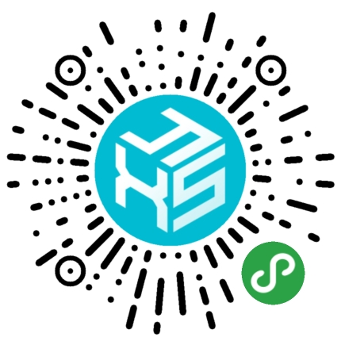
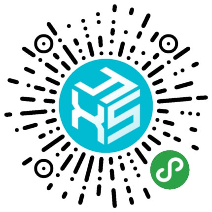
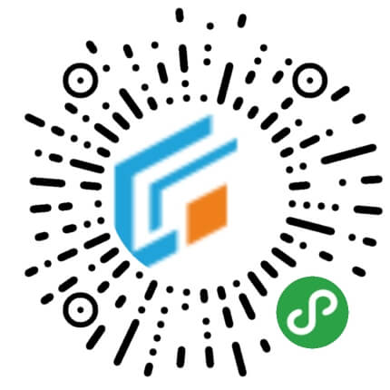

高江宁
Web前端开发 | Java开发
- 男 / 1995.7
- 中国海洋大学
- 生物科学 / 本科 / 2016年毕业
- 工作经验 三年半
经历
金现代信息产业股份有限公司研发中心
2016.07 至 2018.08 工作参与各种外包/研发项目的前端、后台开发，主要包括：
- cms项目内蒙古工业云网一期
内蒙古工业云网作为方便供应方与需求方的信息沟通，多种供需资源整合的平台。提供了各类云应用与配套服务，促进企业市场发展。
担任工作：“应用软件、能力池、需求池”部分的c端页面、后台管理中该部分的代码逻辑、CRUD编写。并在项目完成后参与了部分前端性能调优。 - 铁路工务基础设施状态检测监测系统
本项目用于铁路工务基础设施、轨道几何动态数据等技术信息的检测报警与分析报告。
本人工作内容：(1)定时ftp协议读取中间服务器中各项检测指标数据(线路、坡度、道岔、桥梁等等)TXT文件并导入本地数据库。(2)各个检测指标数据展示方案echarts图表的配置与使用。(3)部分项目框架spring配置维护。 - 禹亳铁路建管平台移动端
使用了echarts展示图表。本项目为监管禹亳铁路建设的问题追踪、进度管理等信息展示所使用的的移动端app。基于ionic框架(基于H5+Angular4前端框架)。
本人负责了该app的登录、信息列表、时间段数据展示、信息上报功能等界面开发、内嵌echarts的使用，同时配合后端人员进行数据接口对接。 - 公司自研项目轻骑兵开发平台v8
轻骑兵是金现代公司的自研软件，是软件开发过程中的相关信息维护、基本框架的提供平台。
本人承担“字典管理”模块列表展示页与数据的CRUD维护、“redis使用情况”模块的数据拉取、展示与页面维护。 - 若干其余项目的前端、后台业务开发
某干部调整辅助决策系统二期项目的相关Excel数据导出
某铁路项目中月报word生成、导出功能的技术支持
离线百度地图使用等
杭州硅云网络科技有限公司
2018.10 至今 工作本公司唯一前端，负责若干电商、外包项目前端开发、少量后台开发，主要包括：
- 若干官网页面开发
杭州硅云网络科技有限公司官网(包括响应式页面)
上海近峰信息科技有限公司-蜂暴车保
上海懿品人才咨询有限公司-中智懿管家
- 若干(电商)小程序开发
小程序框架选用了美团mpvue框架，使用vue语法开发小程序，结构简单方便维护。
  
以上小程序依次为：蜂暴车保(用户端)、蜂暴车行(蜂暴车险合约商户端)、研修生手机维修、骑士上门(严修生维修员端)、硅云商超(公司自研电商平台小程序)。
另有网师猿写字课小程序（仿河小象写字课小程序）正在开发。 - Fanylink翻译客-翻译员平台
包括Fanylink平台的spa网站开发(Angular5)、使用ionic框架开发的安卓与iOS端APP。
技能
- 熟知JS基本语法与知识，熟练使用常用es6新功能语法与API
- 掌握html基本规范、CSS3、SCSS的基本语法与使用，了解网页响应式的实现方法
- 掌握基于Angular4的ionic3 H5APP开发框架、熟练Vue、Angular2+MVVM框架的语法与基本使用
- 掌握若干前端web框架与工具的使用，包括Bootstrap、Layui、jquery及其若干jq插件、echarts、轮播插件sly.js等等
- 熟悉Java基本语法与规范(了解阿里java编码规约)，代码风格良好
- 掌握jsp语法、springmvc框架、springboot的使用
- 掌握hibernate、mybatis等orm框架的使用
- 熟悉jar包管理工具maven的使用，知道pom文件的使用方式
- 掌握关系型数据库基本概念、表的设计
- 熟悉mysql和oracle的sql方言
- 熟悉navicat等数据库GUI工具使用
- 熟悉小程序开发的基本流程、熟练使用微信官方开发者工具
- 熟悉小程序开发文档、小程序配置、wxml、wxss、wxs语法
- 熟悉小程序各个组件、原生能力api的使用
- 掌握原生小程序、mpvue小程序开发框架、了解uni-app等其他小程序开发框架的使用，可随业务需求选择
- 熟悉svn和git代码管理工具
- 熟练利用github、码云等网站进行资源搜索
- 熟练利用chrome浏览器进行前端调试
- 熟练各种IDE的使用：VSCode、JetBrains公司的IntelliJ IDEA、WebStorm，且eclipse、sublime也曾使用
- 了解node与npm等服务端js工具、webpack的基本使用